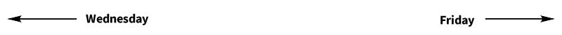

Thursday April 27
{kind=link}
By Thursday morning, the British had retaken control of much of the city as Sackville Street burned, seeing Cleary's and the Imperial Hotel destroyed. Trinity College was now serving as a British army barracks with 4,000 troops now stationed there including the Sherwood Foresters who had fought at Mount Street.
The position held be the rebels around North King Street would see some of the most vicious fighting of the week. Ned Daly's volunteers had barricaded Church Street, North King Street, North Brunswick Street and the surrounding areas. Government troops had no way to know from which direction they would be fired upon, so hoped to avoid direct attack by tunneling through the slum house walls, but this did not stop one Major Sheppard from ordering a frontal assault on one of the rebel barricades, resulting in a hail of mauser bullets and the loss of fifteen men, including Sheppard himself. The Rebels then came over the barricade to claim arms and ammunitions from the fallen.
Government forces used improvised armoured trucks in this area, and on the Grattan Bridge. These were lorries from the Guinness brewery, with bodies fashioned from locomotive smoke-boxes, and the lorry’s cab protected by train footplate roof. The modifications were carried out in the Inchicore railway workshops of the Great Southern and Western Railway. The idea was to reverse up to a building and then open the smoke-box door, whereupon the troops would rush straight out into the house while also providing cover to soldiers storming other nearby positions. Despite this, the frustrations of fighting an enemy that wore no uniform in an area full of women and children who were sympathetic to the rebel cause would come to an ugly head over the following days.
The Irish Volunteer 4th Battalion, led by Eamon Ceannt and Cathal Brugha, had taken the South Dublin Union, now the site of St. James' Hospital on the Monday with the aim of preventing British army attacks into the city centre from the south west, and they fired upon members of the Royal Irish Regiment as they attempted to reach the city centre. This resulted in fierce fighting that left inmates and nurses dead, as well as casualties on both sides. Government forces retook the back of the union although the rebels managed to hold on to the buildings at the fron that faced out on to James' Street. On the Thursday, two battalions of Sherwood Foresters, under the command of Sir Francis Fletcher Vane, attack the union. Fighting takes place in the wards. Cathal Brugha, Ceannt's second in command, single handedly defended his position in the nurses' home until reinforcements arrived. This despite the fact that he had been badly wounded by a hand gernade, he was in fact wounded twenty five times before he was taken out to be tended to. The 4th Battalion were so effective in their defence that the British forces resorted to pinning the rebels down for the rest of the week rather than continuing in their attempt to retake th e Union.
{kind=link}
Sackville Street was in flames but Pearse still tried to convince his men that the country was rising with them, speaking of a large group of rebels that were making their way to Dublin from Dundalk, who had captued a large number of police at Lusk. This despite the fact that James Connolly,a figure of calm and leadership throughout the week in the GPO, was now crippled with a bullet in his arm and another in his ankle, and confined to a stretcher on the floor. The barricades in the street outside took shell fire and the resulting flames consumed the street, Hoyts Pharmaceutical and Chemical Warehouse, with it's supply of turperntine and other flammable materials, went up and from there Cleary's and the Imperial Hotel (the same building) were consumed. The street was in chaos, rebels fired on horses as they bolted from buring buildings and, under continuous fire from Government troops closing in from the direction of the Abbey Theatre, along with troops advancing from Trinity College. They are reduced to using oil from sardine cans to cool their weapons as nothing else was available.
Late on Thursday evening, Brigadere Generl Lowe lauches an attack on the Four Courts, the best held of the rebel locations, under the command of twenty-five year old Ned Daly. The British made their way along cable street, using furniture from the tenement house to construct barricades, and successfully isolate Daly and his troops from the GPO.
